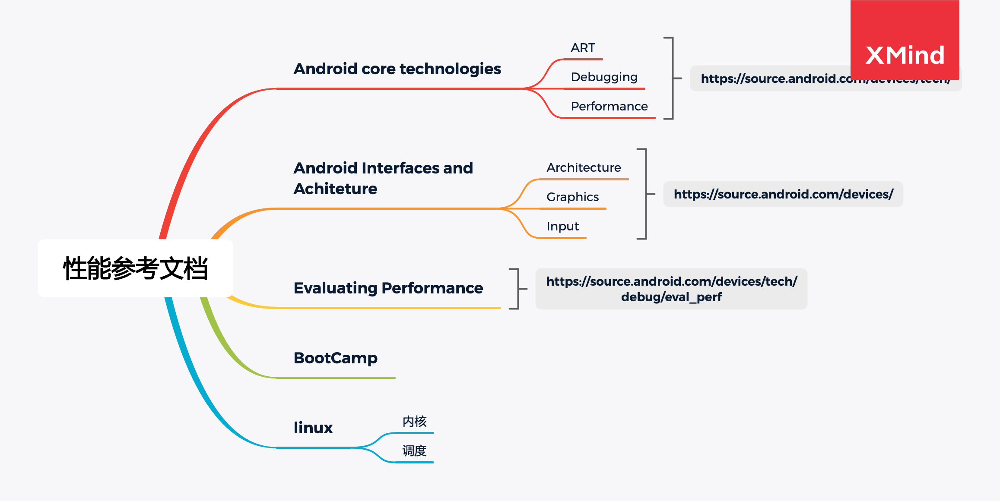

参考文档
 以下是性能优化的重要参考文档：
- Android core technologies 核心模块，ART/Debugging/Performance模块
- Android Interfaces and Architeture，比上一篇更加深入，可以深入学习重要模块
- Architecture 需要通过这里架构图完整理解整个Android系统软件的工作流程
- Graphics，这是详细描述Android Graphics的最好文档
- input 可以根据需要阅读
- Evaluating Performance 重点阅读，包含systrace的使用/典型问题的debug
- Bootcamp文档
- Linux内核
- 内存
- 调度